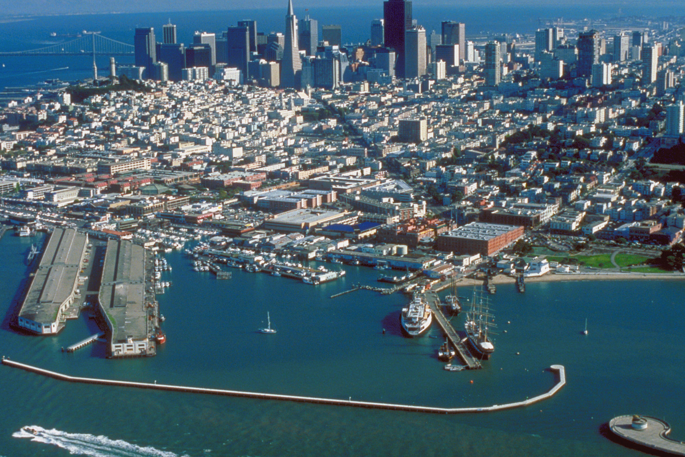
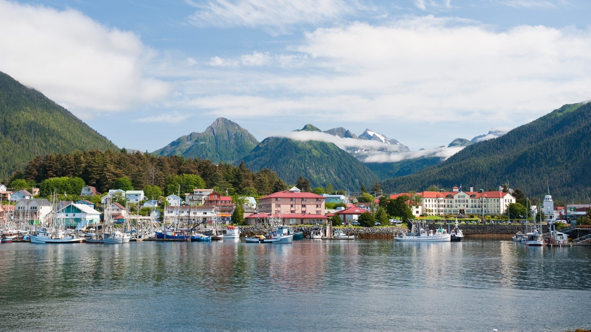

El Mundo que No Fue
Bienvenidos a un análisis profundo de una línea temporal donde la expansión de los Estados Unidos se detuvo en las Montañas Rocosas.
En esta realidad, la geopolítica de América del Norte se define por el equilibrio de poder entre naciones independientes y soberanas. Sin una costa en el Pacífico, el "Destino Manifiesto" quedó incompleto, dando lugar al surgimiento de la República de California y la República de Texas como potencias globales por derecho propio.
Desde la supervivencia del Segundo Imperio Mexicano hasta la resistencia del Imperio Ruso en las gélidas tierras de Alaska, esta cronología explora cómo la ausencia de una superpotencia estadounidense centralizada permitió que los imperios europeos y nuevas naciones americanas moldearan un siglo XX radicalmente distinto. Un mundo de monarquías persistentes, imperios asiáticos dominantes y una Guerra Fría de tres bandas.
Visiones de esta Realidad

Puerto de San Francisco, República de California
Campos Petroleros, República de Texas

Nuevo Arcángel, Imperio de Alaska
Londres, Sede de la Superpotencia Británica

Tokio, Centro del Bloque Panasiático
Ciudad de México, Segundo Imperio Mexicano